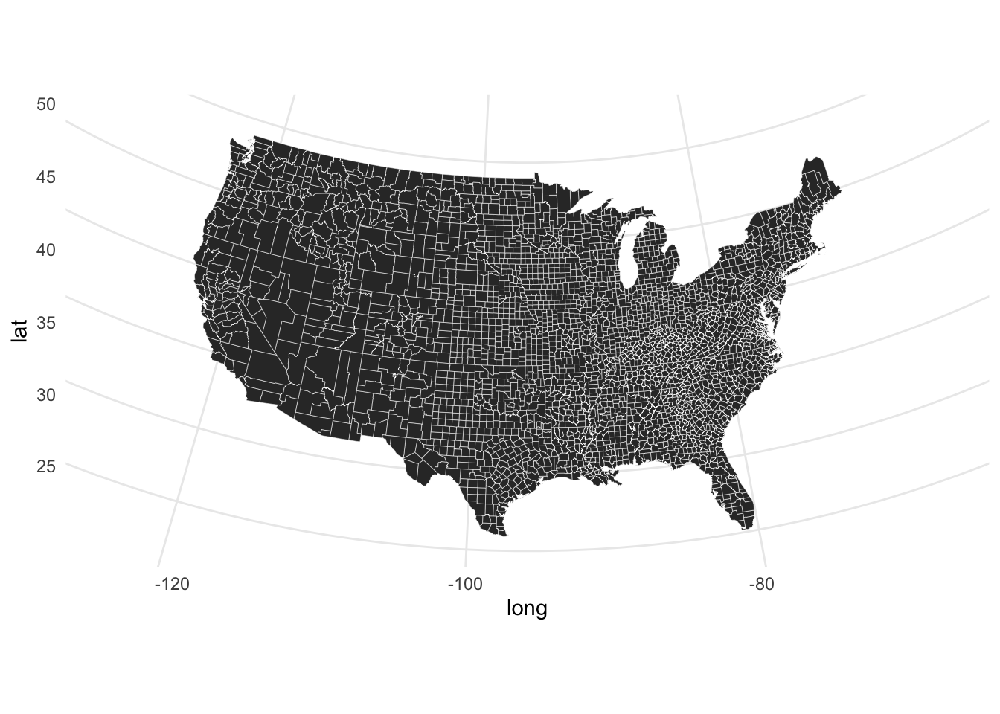
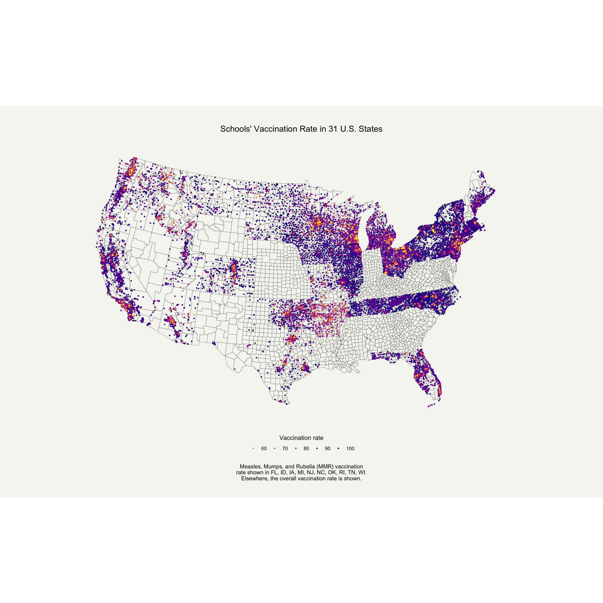

Below, you will find some of the graphs (and accompanying code) I made as part of R4DS‘s weekly visualization challenges. To see the code, click on the ’code’ icon every step of the way. All of the entries I made for #TidyTuesday can be found on my Github page.
Start by loading the necessary packages and the measles data.
# packages
library(tidytuesdayR)
library(tidyverse)
library(pacman)
library(tidyverse)
# data
measles <- readr::read_csv('https://raw.githubusercontent.com/rfordatascience/tidytuesday/master/data/2020/2020-02-25/measles.csv')# packagesLet’s explore the data.
summary(measles$mmr) # distribution of vaccination rates
summary(measles$overall) # distribution of vaccination rates
weird <- measles %>%
filter(overall == -1 | mmr == -1)# who are the "-1" ? Apparently they're missing data.
table(weird$state) # some have missing data for "mmr", some have missing data for "overall" -- we will use this later
length(unique(measles$county)) # how many unique counties?
table(measles$year, useNA = "always") # which years?Then, we need to do some data clean-up.
measles_plot_viz <- measles %>%
distinct(state, name, county, overall, mmr, lat, lng, enroll) %>% # remove duplicates
mutate(drop = ifelse(mmr >= 0 & overall >= 0, "drop", "keep")) %>%
filter(lng < 0) %>% # remove schools outside of the continent
gather(type, value, overall:mmr) %>%
filter(value >= 0) %>%
filter(!(drop == "drop" & type == "overall"))Finally, let’s draw the map! I will be using the maps package to do so. I had help from Kieran Healy’s book during this step, as well as Timo Grossenbacher’s blog.
# load packages
library(maps)
library(mapproj)
# 1. load the county data
us_counties <- map_data("county") %>%
mutate(state_county = str_c(region, subregion, sep = "_"))
head(us_counties)
# 2. check the distribution of vacc. rate
summary(measles_plot_viz$value)
# 3. draw a plain county map to see if it's working
p <- ggplot(mapping = aes(x = long, y = lat, group = group), data = us_counties)
p1 <- p + geom_polygon(color = "white", size = 0.1) +
coord_map(projection = "albers", lat0 = 39, lat1 = 45) +
guides(fill = FALSE) +
theme_minimal()
p1
Now that we know the map is working at the vaccination data makes sense, we can plot vaccination rates across the U.S. But first, for the map’s caption, we need to check which type of vaccination rate is plotted in which state:
table(measles_plot_viz$type, measles_plot_viz$state) ##
## Arizona Arkansas California Colorado Connecticut Florida Idaho
## mmr 1171 567 14068 1501 586 0 0
## overall 0 0 0 0 0 2667 467
##
## Illinois Iowa Maine Massachusetts Michigan Minnesota Missouri
## mmr 7115 0 357 946 0 1570 645
## overall 0 1163 0 0 2351 0 0
##
## Montana New Jersey New York North Carolina North Dakota Ohio
## mmr 520 0 4137 0 360 2919
## overall 0 1993 0 2083 0 0
##
## Oklahoma Oregon Pennsylvania Rhode Island South Dakota Tennessee
## mmr 0 806 1930 0 373 0
## overall 1052 0 0 215 0 1152
##
## Texas Utah Vermont Washington Wisconsin
## mmr 810 603 255 1977 0
## overall 0 0 0 0 2497Now we can plot:
# 4. draw map with vacc. data
p <- ggplot()
p1 <- p +
geom_polygon(mapping = aes(x = long, y = lat, group = group),
data = us_counties,
fill = "#f5f5f2",
color = "black",
size = 0.1) + # add county lines
geom_point(mapping = aes(x = lng, y = lat, color = value),
data = subset(measles_plot_viz, value > 50),
size = 0.6) + # add school dots
coord_map(projection = "albers", lat0 = 39, lat1 = 45) + # make the map more "curvy"
theme_void() + # remove grid and axes
theme(legend.position = "bottom",
plot.title = element_text(hjust = 0.5,
vjust = 0.5,
size = 15),
plot.background = element_rect(fill = "#f5f5f2",
color = NA),
plot.caption = element_text(hjust = 0.5,
size = 10),
plot.margin = margin(t = 1, r = 1, b = 1, l = 1,
unit = "cm"),
legend.margin = margin(t = 2, r = 2, b = 5, l = 2,
unit = "mm")) + # modify plot title/caption/background/legend
scale_color_viridis_c(option = "plasma",
direction = -1,
name = "Vaccination rate",
guide = guide_legend(direction = "horizontal",
title.position = "top",
title.hjust = 0.5)) + # change legend title
labs(title = "Schools' Vaccination Rate in 31 U.S. States",
caption = "Measles, Mumps, and Rubella (MMR) vaccination\nrate shown in FL, ID, IA, MI, NJ, NC, OK, RI, TN, WI.\nElsewhere, the overall vaccination rate is shown.") # deifne title and subtitle
p1
# save plot using ggsave(filename = "name.png", plot = last_plot(), width = 15, height = 15)